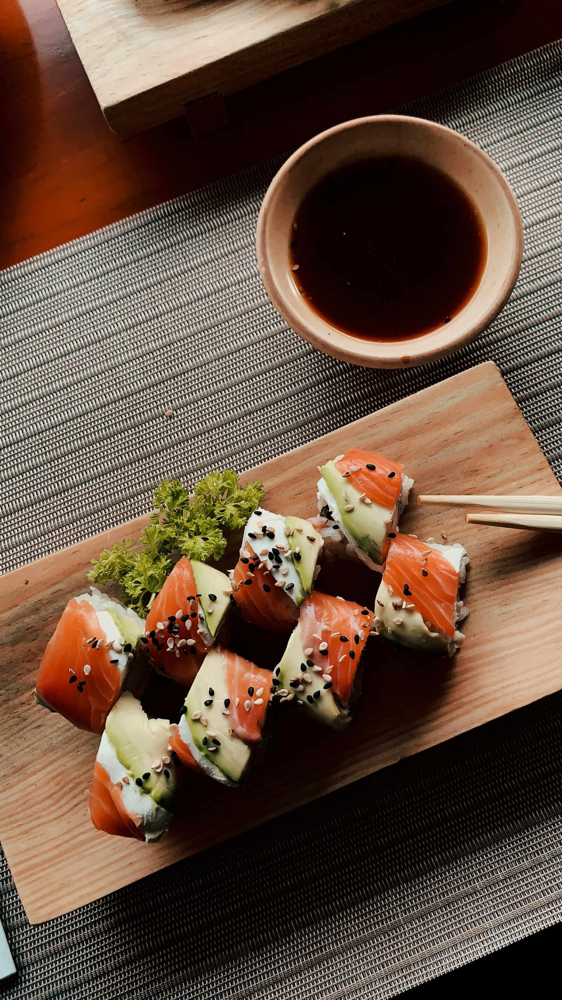

Sushi Recipe

Photo by
Derek Duran
Description
Sushi is a traditional Japanese dish made with vinegared rice,
fresh fish, and vegetables. It is known for its clean flavors
and beautiful presentation.
This simple sushi recipe introduces basic ingredients and steps
to help beginners understand how sushi rolls are made. It is a
great dish to prepare for lunch or dinner.
Ingredients
- Sushi rice
- Nori sheets (seaweed)
- Fresh salmon or tuna
- Cucumber
- Avocado
- Soy sauce
- Rice vinegar
Steps
- Cook the sushi rice according to the package instructions.
- Season the rice with rice vinegar and let it cool.
- Place a sheet of nori on a bamboo sushi mat.
- Spread a thin layer of rice evenly over the nori.
- Add slices of fish, cucumber, and avocado in the center.
- Carefully roll the sushi using the mat.
- Slice the roll into bite-sized pieces.
- Serve with soy sauce.
Back to Home